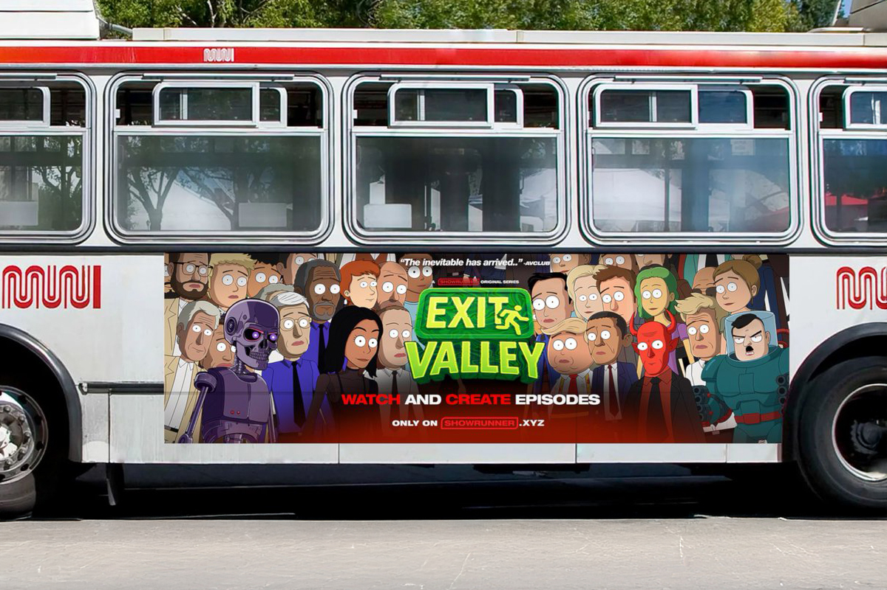
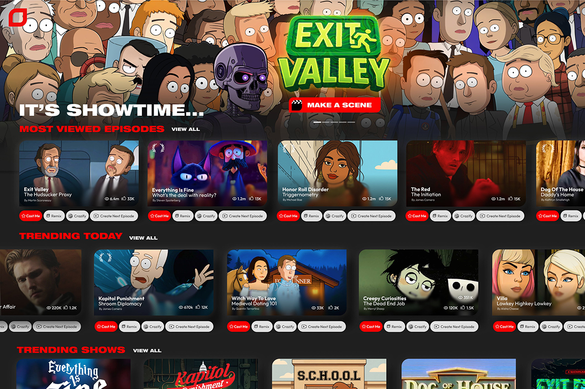
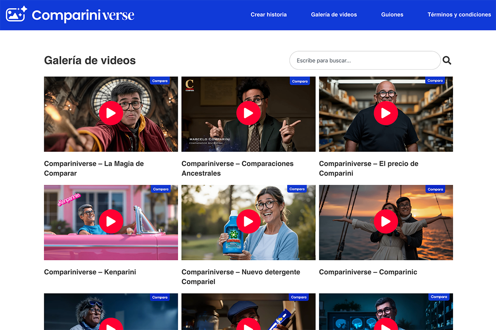

Ya puedes crear tu propia serie gracias a la IA
¿Compara o Amazon? ¿Quién lo hizo primero?
¿Compara o Amazon? ¿Quién lo hizo primero?

¿Y si te dijera que podrías crear tu propia serie animada en minutos, sin saber dibujar, escribir guiones ni editar videos? No es broma. Se llama Showrunner y acaba de ser adquirida por Amazon.
Esta herramienta permite generar episodios de hasta 10 minutos con inteligencia artificial. El proceso es simple: escribes la idea básica, eliges el estilo visual y los personajes, y en pocos clics tienes un capítulo completo con voces, música y guiones incluidos.
Más allá del impacto tecnológico -que es evidente- lo que realmente llama la atención es que Showrunner está disponible para cualquier persona con acceso a internet. No necesitas ser cineasta ni tener una productora. Solo una idea. Y eso abre la puerta a algo grande: una nueva era en la creación de contenido.

Durante años, hacer una serie ha sido un privilegio de pocos. Hoy herramientas como Showrunner proponen un camino distinto, donde contar historias ya no depende del presupuesto, sino de la imaginación.
La inteligencia artificial automatiza gran parte del proceso, sí. Pero la chispa creativa sigue siendo humana. La emoción detrás de una historia, el tipo de humor o incluso el mensaje… todo eso sigue naciendo de nuestra experiencia y sensibilidad.
Así que, lejos de ser una amenaza para la creatividad, esta tecnología puede convertirse en una gran aliada para amplificar nuevas voces.

Este avance también cambia las reglas del juego en la industria del entretenimiento. Las plataformas de streaming viven una transformación en la que los espectadores no solo consumen contenido: ahora también pueden generarlo.
Imagínalo así: en vez de buscar una serie que te enganche, podrías crear una que se adapte exactamente a tu humor del día. ¿Una comedia tipo South Park con tintes de Black Mirror? Ya es posible.
Y aunque algunos temen la saturación de contenido o la pérdida de lo artesanal, no todo lo nuevo tiene que ser visto de reojo. Así como Canva transformó el diseño gráfico o TikTok revolucionó el lenguaje audiovisual, Showrunner puede potenciar el talento, no reemplazarlo.

En ComparaOnline solemos ayudarte a tomar mejores decisiones en tu día a día -como contratar un seguro-, pero también creemos que es clave entender el contexto en el que vivimos: un mundo donde la tecnología no solo transforma mercados, sino también nuestras ideas sobre lo posible.
Por eso, cuando vimos lo que estaba pasando con la IA, decidimos probarla nosotros mismos. Así nació Compariniverse, una serie de más de 100 spots publicitarios generados 99% con inteligencia artificial (sí, el toque creativo sigue siendo humano).
Y no nos quedamos ahí: abrimos la experiencia par que tú también puedas crear tu propio spot de Comparini. Al estilo de Titanic, Barbie o el clásico perfume francés… tú eliges la historia, nosotros te ayudamos a crearla con IA. Los mejores 3, además, serán seleccionados para salir en la tele y ganar hasta $1.000.000 y Seguro de Auto y Asistencia de Viaje.
¿Te animas a probarlo? Puedes registrarte en compariniverse.cl.
Porque al final, lo que propone Showrunner -y lo que estamos viviendo con Compariniverse- es más que una moda: es una nueva forma de contar historias, donde la tecnología no reemplaza la creatividad, sino que la multiplica.
Y ahora que las herramientas están al alcance de todos… ¿Qué historia elegirías contar tú?
 Actualidad
ActualidadEl recordado programa noventero “Venga Conmigo” marcó a toda una generación en Chile. Su exitoso segmento “Corazones Service” se transformó…
 Actualidad
ActualidadHace aproximadamente 2 meses comenzamos con el cierre de lo que empezó en julio como el “Compariniverse”.
 Actualidad
ActualidadHace unos meses lanzamos Compariniverse: la primera campaña en Chile protagonizada por una celebridad completamente clonada con IA.